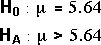

Returns from Mutual Funds

Use this diagram to illustrate how to find the p-value for testing µ when σ is unknown.
Since σ is unknown, we cannot find the distn of the sample mean, even assuming H0 — hence the pale blue question mark behind the data.
The sample mean is translated into a t-statistic on the right and the tail area from the t distn (n - 1 = 24 df) is shown and translated into a p-value.
Since the p-value is virtually zero, it is almost certain that the mean return from this type of fund is more than 5.64%.
Select Modified data from the pop-up menu and use the slider to discuss how different values for the sample mean would affect the conclusion.
Investing in the share market can be risky for small investors since the value of individual companies can fluctuate greatly, especially over short periods of time. These risks can be reduced by buying shares in a mutual fund that spreads the investment amoung a wide portfolio of companies.
Different mutual funds invest in companies of different types and with different inherent risks of losing and (hopefully) gaining value. Some funds have been categorised as 'high-risk' funds and a sample of 25 of these is shown in the table below. The percentage return paid by these funds over a 3-year period (April 1997 to March 2000) is also shown. (The stock market did particularly well over this period!)
The corresponding annualised return from Federal Constant Maturity Rate Bonds over this period was 5.64%. Did the high-risk funds do any better on average than this 'safe' investment?
| High-risk mutual fund | Annualised 3-year return (1997-2000) |
||
|---|---|---|---|
|
|